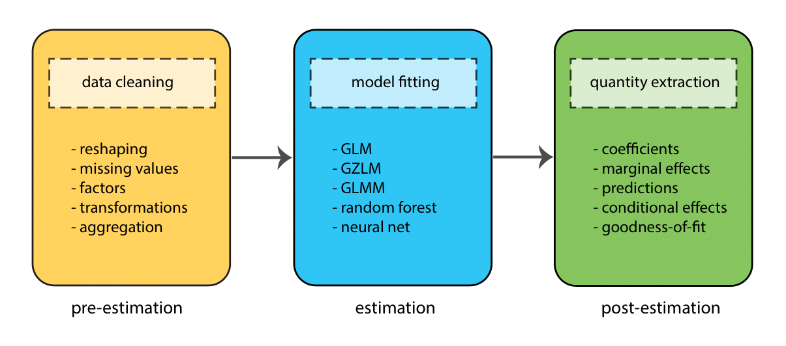
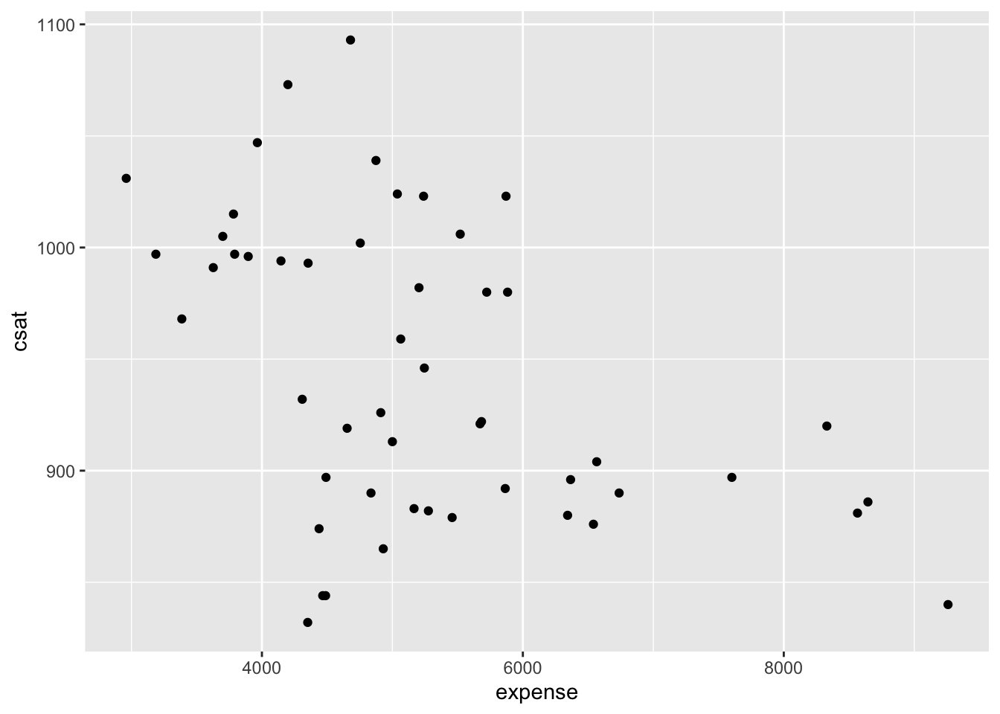
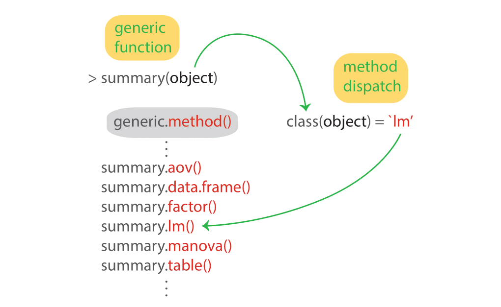
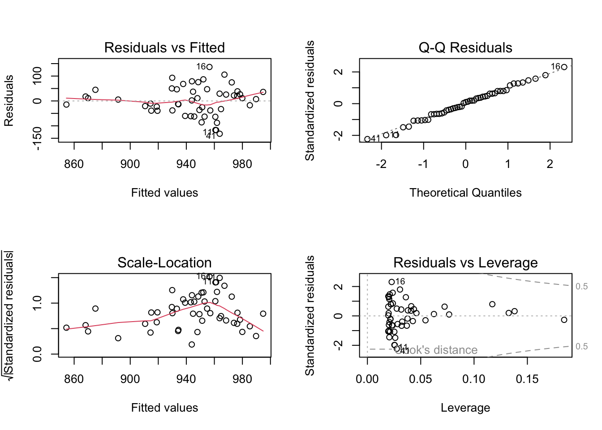
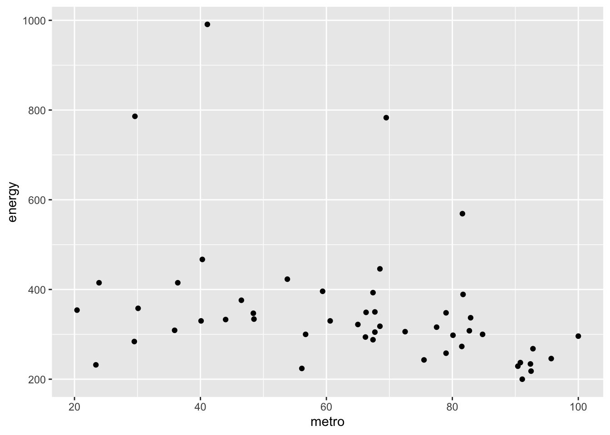
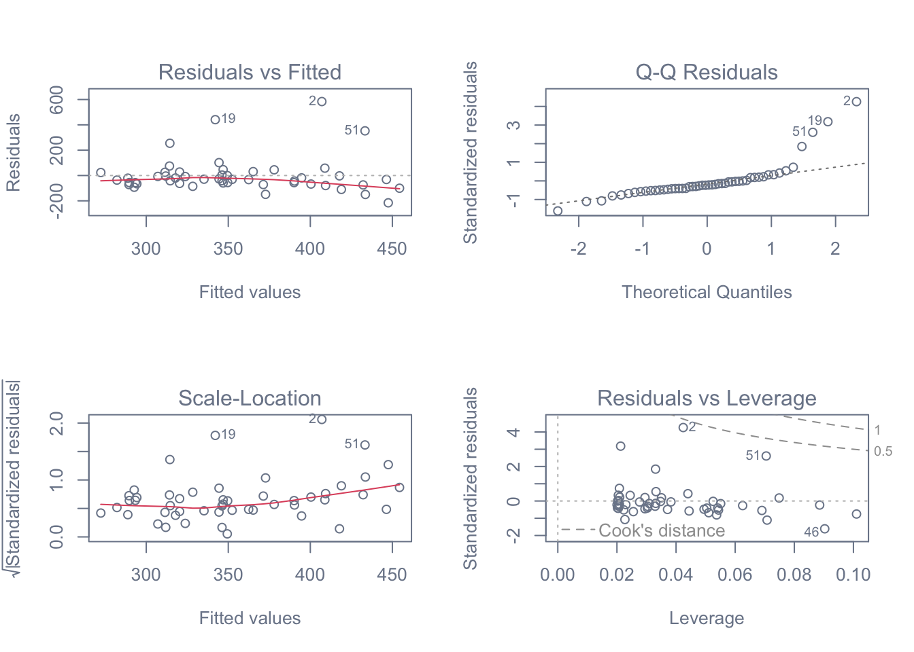
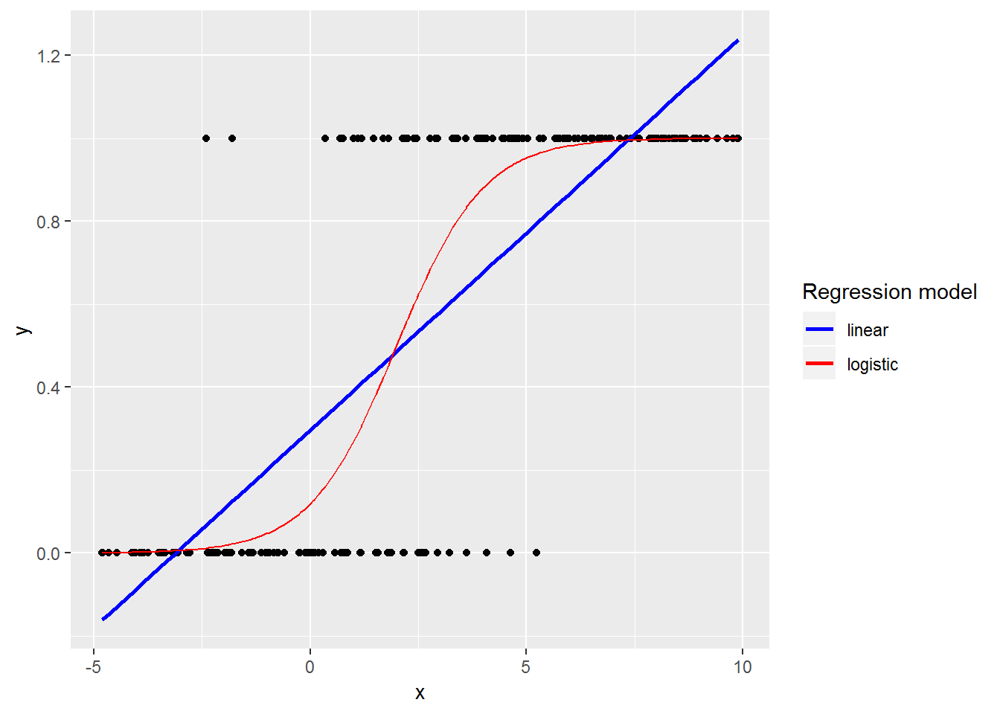
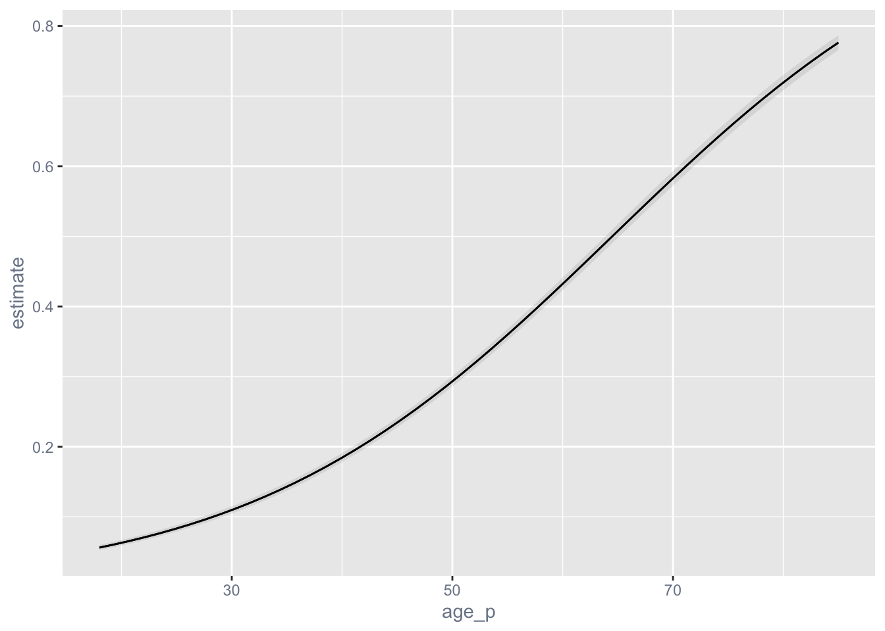

library(tidyverse)R Regression Models
Topics
- Formula interface for model specification
- Function methods for extracting quantities of interest from models
- Contrasts to test specific hypotheses
- Model comparisons
- Predicted marginal effects
- Modeling continuous and binary outcomes
- Modeling clustered data
Setup
Software and Materials
Follow the R Installation instructions and ensure that you can successfully start Positron.
Class Structure
Informal - Ask questions at any time. Really!
Collaboration is encouraged - please spend a minute introducing yourself to your neighbors!
Prerequisites
This is an intermediate R course:
- Assumes working knowledge of R
- Relatively fast-paced
- This is not a statistics course! We will teach you how to fit models in R, but we assume you know the theory behind the models.
Goals
We will learn about the R modeling ecosystem by fitting a variety of statistical models to different datasets. In particular, our goals are to learn about:
- Modeling workflow
- Visualizing and summarizing data before modeling
- Modeling continuous outcomes
- Modeling binary outcomes
- Modeling clustered data
We will not spend much time interpreting the models we fit, since this is not a statistics workshop. But, we will walk you through how model results are organized and orientate you to where you can find typical quantities of interest.
Launch an R session
Start Positron and open the workshop materials folder:
- On Mac, Positron will be in your Applications folder. On Windows, click the start button and search for Positron.
- In Positron go to
File -> Open Folderand choose the workshop materials folder on your desktop. Positron makes it the working directory, which is where the data files are, and lists its files in the Explorer on the left. - In the Explorer, click the file with the word “BLANK” in the name to open it.
Packages
You should have already installed the tidyverse suite of packages onto your computer before the workshop — see R Installation. Now let’s load it into the search path of our R session.
Finally, lets install some packages that will help with modeling:
# install.packages("lme4")
library(lme4) # for mixed models
# install.packages("marginaleffects")
library(marginaleffects) # for predictions, comparisons and marginal effects
# install.packages("emmeans")
library(emmeans) # for contrasts among the levels of a factorModeling workflow
Before we delve into the details of how to fit models in R, it’s worth taking a step back and thinking more broadly about the components of the modeling process. These can roughly be divided into 3 stages:
- Pre-estimation
- Estimation
- Post-estimaton
At each stage, the goal is to complete a different task (e.g., to clean data, fit a model, test a hypothesis), but the process is sequential — we move through the stages in order (though often many times in one project!)

Throughout this workshop we will go through these stages several times as we fit different types of model.
R modeling ecosystem
There are literally hundreds of R packages that provide model fitting functionality. We’re going to focus on just two during this workshop — stats, from Base R, and lme4. It’s a good idea to look at CRAN Task Views when trying to find a modeling package for your needs, as they provide an extensive curated list. But, here’s a more digestable table showing some of the most popular packages for particular types of model.
| Models | Packages |
|---|---|
| Generalized linear | stats, biglm, MASS, robustbase |
| Mixed effects | lme4, nlme, glmmTMB, MASS |
| Econometric | pglm, VGAM, pscl, survival |
| Bayesian | brms, blme, MCMCglmm, rstan |
| Machine learning | mlr, caret, h2o, tensorflow |
Before fitting a model
GOAL: To learn about the data by creating summaries and visualizations.
One important part of the pre-estimation stage of model fitting, is gaining an understanding of the data we wish to model by creating plots and summaries. Let’s do this now.
Load the data
List the data files we’re going to work with:
list.files("dataSets")[1] "Exam.rds" "NatHealth2008MI" "NatHealth2011.rds"
[4] "states.rds" We’re going to use the states data first, which originally appeared in Statistics with Stata by Lawrence C. Hamilton.
# read the states data
states <- read_rds("dataSets/states.rds")
# look at the last few rows
tail(states) state region pop area density metro waste energy miles toxic
46 Vermont N. East 563000 9249 60.87 23.4 0.69 232 10.4 1.81
47 Virginia South 6187000 39598 156.25 72.5 1.45 306 9.7 12.87
48 Washington West 4867000 66582 73.10 81.7 1.05 389 9.2 8.51
49 West Virginia South 1793000 24087 74.44 36.4 0.95 415 8.6 21.30
green house senate csat vsat msat percent expense income high college
46 15.17 85 94 890 424 466 68 6738 34.717 80.8 24.3
47 18.72 33 54 890 424 466 60 4836 38.838 75.2 24.5
48 16.51 52 64 913 433 480 49 5000 36.338 83.8 22.9
49 51.14 48 57 926 441 485 17 4911 24.233 66.0 12.3
[ reached 'max' / getOption("max.print") -- omitted 2 rows ]Here’s a table that describes what each variable in the dataset represents:
| Variable | Description |
|---|---|
| csat | Mean composite SAT score |
| expense | Per pupil expenditures |
| percent | % HS graduates taking SAT |
| income | Median household income, $1,000 |
| region | Geographic region: West, N. East, South, Midwest |
| house | House ’91 environ. voting, % |
| senate | Senate ’91 environ. voting, % |
| energy | Per capita energy consumed, Btu |
| metro | Metropolitan area population, % |
| waste | Per capita solid waste, tons |
Examine the data
Start by examining the data to check for problems.
# summary of expense and csat columns, all rows
states_ex_sat <- states |>
select(expense, csat)
summary(states_ex_sat) expense csat
Min. :2960 Min. : 832.0
1st Qu.:4352 1st Qu.: 888.0
Median :5000 Median : 926.0
Mean :5236 Mean : 944.1
3rd Qu.:5794 3rd Qu.: 997.0
Max. :9259 Max. :1093.0 # correlation between expense and csat
cor(states_ex_sat, use = "pairwise") expense csat
expense 1.0000000 -0.4662978
csat -0.4662978 1.0000000Plot the data
Plot the data to look for multivariate outliers, non-linear relationships etc.
# scatter plot of expense vs csat
qplot(x = expense, y = csat, geom = "point", data = states_ex_sat)
Obviously, in a real project, you would want to spend more time investigating the data, but we’ll now move on to modeling.
Models with continuous outcomes
GOAL: To learn about the R modeling ecosystem by fitting ordinary least squares (OLS) models. In particular:
- Formula representation of model specification
- Model classes
- Function methods
- Model comparison
Once the data have been inspected and cleaned, we can start estimating models. The simplest models (but those with the most assumptions) are those for continuous and unbounded outcomes. Typically, for these outcomes, we’d use a model estimated using Ordinary Least Lquares (OLS), which in R can be fit with the lm() (linear model) function.
To fit a model in R, we first have to convert our theoretical model into a formula — a symbolic representation of the model in R syntax:
# formula for model specification
outcome ~ pred1 + pred2 + pred3
# NOTE the ~ is a tildeFor example, the following theoretical model predicts SAT scores based on per-pupil expenditures:
\[ SATscores_i = \beta_{0}1 + \beta_1expenditures_i + \epsilon_i \]
We can use lm() to fit this model:
# fit our regression model
sat_mod <- lm(csat ~ 1 + expense, # regression formula
data = states) # data
# look at the basic printed output
sat_mod
Call:
lm(formula = csat ~ 1 + expense, data = states)
Coefficients:
(Intercept) expense
1060.73244 -0.02228 The default printed output from the fitted model is very austere — just point estimates of the coefficients. We can get more information by passing the fitted model object to the summary() function, which provides standard errors, test statistics, and p-values for individual coefficients, as well as goodness-of-fit measures for the overall model.
# get more informative summary information
summary(sat_mod)
Call:
lm(formula = csat ~ 1 + expense, data = states)
Residuals:
Min 1Q Median 3Q Max
-131.811 -38.085 5.607 37.852 136.495
Coefficients:
Estimate Std. Error t value Pr(>|t|)
(Intercept) 1.061e+03 3.270e+01 32.44 < 2e-16 ***
expense -2.228e-02 6.037e-03 -3.69 0.000563 ***
---
Signif. codes: 0 '***' 0.001 '**' 0.01 '*' 0.05 '.' 0.1 ' ' 1
Residual standard error: 59.81 on 49 degrees of freedom
Multiple R-squared: 0.2174, Adjusted R-squared: 0.2015
F-statistic: 13.61 on 1 and 49 DF, p-value: 0.0005631If we just want to inspect the coefficients, we can further pipe the summary output into the function coef() to obtain just the table of coefficients.
# show only the regression coefficients table
summary(sat_mod) |> coef() Estimate Std. Error t value Pr(>|t|)
(Intercept) 1060.73244395 32.700896736 32.437412 8.878411e-35
expense -0.02227565 0.006037115 -3.689783 5.630902e-04Why is the association between expense & SAT scores negative?
Many people find it surprising that the per-capita expenditure on students is negatively related to SAT scores. The beauty of multiple regression is that we can try to pull these apart. What would the association between expense and SAT scores be if there were no difference among the states in the percentage of students taking the SAT?
lm(csat ~ 1 + expense + percent, data = states) |>
summary()
Call:
lm(formula = csat ~ 1 + expense + percent, data = states)
Residuals:
Min 1Q Median 3Q Max
-62.921 -24.318 1.741 15.502 75.623
Coefficients:
Estimate Std. Error t value Pr(>|t|)
(Intercept) 989.807403 18.395770 53.806 < 2e-16 ***
expense 0.008604 0.004204 2.046 0.0462 *
percent -2.537700 0.224912 -11.283 4.21e-15 ***
---
Signif. codes: 0 '***' 0.001 '**' 0.01 '*' 0.05 '.' 0.1 ' ' 1
Residual standard error: 31.62 on 48 degrees of freedom
Multiple R-squared: 0.7857, Adjusted R-squared: 0.7768
F-statistic: 88.01 on 2 and 48 DF, p-value: < 2.2e-16The lm class & methods
Okay, we fitted our model. Now what? Typically, the main goal in the post-estimation stage of analysis is to extract quantities of interest from our fitted model. These quantities could be things like:
- Testing whether one group is different on average from another group
- Generating average response values from the model for interesting combinations of predictor values
- Calculating interval estimates for particular coefficients
But before we can do any of that, we need to know more about what a fitted model actually is, what information it contains, and how we can extract from it information that we want to report.
To understand what a fitted model object is and what information we can extract from it, we need to know about the concepts of class and method. A class defines a type of object, describing what properties it possesses, how it behaves, and how it relates to other types of objects. Every object must be an instance of some class. A method is a function associated with a particular type of object.
Let’s start by examining the class of the model object:
# what class of object is the fitted model?
class(sat_mod)[1] "lm"We can see that the fitted model object is of class lm, which stands for linear model. What quantities are stored within this model object?
# what are the elements stored within the fitted model object?
names(sat_mod) [1] "coefficients" "residuals" "effects" "rank"
[5] "fitted.values" "assign" "qr" "df.residual"
[9] "xlevels" "call" "terms" "model" We can see that 12 different things are stored within a fitted model of class lm. In what structure are these quantities organized?
# what is the structure of the fitted model object?
str(sat_mod)List of 12
$ coefficients : Named num [1:2] 1060.7324 -0.0223
..- attr(*, "names")= chr [1:2] "(Intercept)" "expense"
$ residuals : Named num [1:51] 11.1 44.8 -32.7 26.7 -63.7 ...
..- attr(*, "names")= chr [1:51] "1" "2" "3" "4" ...
$ effects : Named num [1:51] -6742.2 220.7 -31.7 29.7 -63.2 ...
..- attr(*, "names")= chr [1:51] "(Intercept)" "expense" "" "" ...
$ rank : int 2
$ fitted.values: Named num [1:51] 980 875 965 978 961 ...
..- attr(*, "names")= chr [1:51] "1" "2" "3" "4" ...
$ assign : int [1:2] 0 1
$ qr :List of 5
..$ qr : num [1:51, 1:2] -7.14 0.14 0.14 0.14 0.14 ...
.. ..- attr(*, "dimnames")=List of 2
.. .. ..$ : chr [1:51] "1" "2" "3" "4" ...
.. .. ..$ : chr [1:2] "(Intercept)" "expense"
.. ..- attr(*, "assign")= int [1:2] 0 1
..$ qraux: num [1:2] 1.14 1.33
..$ pivot: int [1:2] 1 2
..$ tol : num 1e-07
..$ rank : int 2
..- attr(*, "class")= chr "qr"
$ df.residual : int 49
$ xlevels : Named list()
$ call : language lm(formula = csat ~ 1 + expense, data = states)
$ terms :Classes 'terms', 'formula' language csat ~ 1 + expense
.. ..- attr(*, "variables")= language list(csat, expense)
.. ..- attr(*, "factors")= int [1:2, 1] 0 1
.. .. ..- attr(*, "dimnames")=List of 2
.. .. .. ..$ : chr [1:2] "csat" "expense"
.. .. .. ..$ : chr "expense"
.. ..- attr(*, "term.labels")= chr "expense"
.. ..- attr(*, "order")= int 1
.. ..- attr(*, "intercept")= int 1
.. ..- attr(*, "response")= int 1
.. ..- attr(*, ".Environment")=<environment: R_GlobalEnv>
.. ..- attr(*, "predvars")= language list(csat, expense)
.. ..- attr(*, "dataClasses")= Named chr [1:2] "numeric" "numeric"
.. .. ..- attr(*, "names")= chr [1:2] "csat" "expense"
$ model :'data.frame': 51 obs. of 2 variables:
..$ csat : int [1:51] 991 920 932 1005 897 959 897 892 840 882 ...
..$ expense: int [1:51] 3627 8330 4309 3700 4491 5064 7602 5865 9259 5276 ...
..- attr(*, "terms")=Classes 'terms', 'formula' language csat ~ 1 + expense
.. .. ..- attr(*, "variables")= language list(csat, expense)
.. .. ..- attr(*, "factors")= int [1:2, 1] 0 1
.. .. .. ..- attr(*, "dimnames")=List of 2
.. .. .. .. ..$ : chr [1:2] "csat" "expense"
.. .. .. .. ..$ : chr "expense"
.. .. ..- attr(*, "term.labels")= chr "expense"
.. .. ..- attr(*, "order")= int 1
.. .. ..- attr(*, "intercept")= int 1
.. .. ..- attr(*, "response")= int 1
.. .. ..- attr(*, ".Environment")=<environment: R_GlobalEnv>
.. .. ..- attr(*, "predvars")= language list(csat, expense)
.. .. ..- attr(*, "dataClasses")= Named chr [1:2] "numeric" "numeric"
.. .. .. ..- attr(*, "names")= chr [1:2] "csat" "expense"
- attr(*, "class")= chr "lm"We can see that the fitted model object is a list structure (a container that can hold different types of objects). What have we learned by examining the fitted model object? We can see that the default output we get when printing a fitted model of class lm is only a small subset of the information stored within the model object. How can we access other quantities of interest from the model?
We can use methods (functions designed to work with specific classes of object) to extract various quantities from a fitted model object (sometimes these are referred to as extractor functions). A list of all the available methods for a given class of object can be shown by using the methods() function with the class argument set to the class of the model object:
# methods for class `lm`
methods(class = class(sat_mod)) [1] add1 alias anova case.names coerce
[6] confint cooks.distance deviance dfbeta dfbetas
[11] dffits drop1 dummy.coef effects emm_basis
[16] extractAIC family formula fortify get_predict
[21] hatvalues influence initialize kappa labels
[26] logLik model.frame model.matrix nobs plot
[31] predict print proj qqnorm qr
[36] recover_data residuals rstandard rstudent set_coef
[41] show simulate slotsFromS3 summary variable.names
[46] vcov
see '?methods' for accessing help and source codeThere are dozens of methods available for the lm class — the exact number depends on which packages you have attached, since a package can add methods for a class it did not define. We’ve already seen the summary() method for lm, which is always a good place to start after fitting a model:
# summary table
summary(sat_mod)
Call:
lm(formula = csat ~ 1 + expense, data = states)
Residuals:
Min 1Q Median 3Q Max
-131.811 -38.085 5.607 37.852 136.495
Coefficients:
Estimate Std. Error t value Pr(>|t|)
(Intercept) 1.061e+03 3.270e+01 32.44 < 2e-16 ***
expense -2.228e-02 6.037e-03 -3.69 0.000563 ***
---
Signif. codes: 0 '***' 0.001 '**' 0.01 '*' 0.05 '.' 0.1 ' ' 1
Residual standard error: 59.81 on 49 degrees of freedom
Multiple R-squared: 0.2174, Adjusted R-squared: 0.2015
F-statistic: 13.61 on 1 and 49 DF, p-value: 0.0005631We can use the confint() method to get interval estimates for our coefficients:
# confidence intervals
confint(sat_mod) 2.5 % 97.5 %
(Intercept) 995.01753164 1126.44735626
expense -0.03440768 -0.01014361And we can use the anova() method to get an ANOVA-style table of the model:
# ANOVA table
anova(sat_mod) Analysis of Variance Table
Response: csat
Df Sum Sq Mean Sq F value Pr(>F)
expense 1 48708 48708 13.614 0.0005631 ***
Residuals 49 175306 3578
---
Signif. codes: 0 '***' 0.001 '**' 0.01 '*' 0.05 '.' 0.1 ' ' 1How does R know which method to call for a given object? R uses generic functions, which provide access to the methods. Method dispatch takes place based on the class of the first argument to the generic function. For example, for the generic function summary() and an object of class lm, the method dispatched will be summary.lm(). Here’s a schematic that shows the process of method dispatch in action:

Function methods always take the form generic.method(). Let’s look at all the methods for the generic summary() function:
# methods for generic `summary()` function
methods("summary") [1] summary,ANY-method summary,diagonalMatrix-method
[3] summary,sparseMatrix-method summary.allFit*
[5] summary.aov summary.aovlist*
[7] summary.aspell* summary.check_packages_in_dir*
[9] summary.connection summary.corAR1*
[11] summary.corARMA* summary.corCAR1*
[13] summary.corCompSymm* summary.corExp*
[15] summary.corGaus* summary.corIdent*
[17] summary.corLin* summary.corNatural*
[19] summary.corRatio* summary.corSpher*
[21] summary.corStruct* summary.corSymm*
[23] summary.data.frame summary.Date
[25] summary.default summary.difftime
[27] summary.Duration* summary.ecdf*
[29] summary.emm_list* summary.emmGrid*
[31] summary.factor summary.free1way*
[33] summary.ggplot2::ggplot* summary.glht_list*
[35] summary.glm summary.gls*
[37] summary.infl* summary.Interval*
[39] summary.lm summary.lme*
[41] summary.lmList* summary.lmList4*
[43] summary.loess* summary.loglm*
[45] summary.manova summary.matrix
[47] summary.merMod* summary.mlm*
[49] summary.modelStruct* summary.negbin*
[51] summary.nls* summary.nlsList*
[53] summary.packageStatus* summary.pdBlocked*
[55] summary.pdCompSymm* summary.pdDiag*
[57] summary.pdIdent* summary.pdLogChol*
[59] summary.pdMat* summary.pdNatural*
[61] summary.pdSymm* summary.Period*
[63] summary.polr* summary.POSIXct
[65] summary.POSIXlt summary.ppr*
[67] summary.prcomp* summary.prcomplist*
[69] summary.princomp* summary.proc_time
[71] summary.reStruct* summary.rlang_error*
[73] summary.rlang_message* summary.rlang_trace*
[75] summary.rlang_warning* summary.rlang:::list_of_conditions*
[77] summary.rlm* summary.shingle*
[79] summary.srcfile summary.srcref
[81] summary.stepfun summary.stl*
[83] summary.summary_eml* summary.summary_emm*
[85] summary.summary.merMod* summary.table
[87] summary.trellis* summary.tukeysmooth*
[89] summary.varComb* summary.varConstPower*
[91] summary.varConstProp* summary.varExp*
[93] summary.varFixed* summary.varFunc*
[95] summary.varIdent* summary.varPower*
[97] summary.vctrs_sclr* summary.vctrs_vctr*
[99] summary.warnings
see '?methods' for accessing help and source codeThere are well over a hundred summary() methods, and the list grows with every package you attach!
It’s always worth examining whether the class of model you’ve fitted has a method for a particular generic extractor function. Here’s a summary table of some of the most often used extractor functions, which have methods for a wide range of model classes. These are post-estimation tools you will want in your toolbox:
| Function | Package | Output |
|---|---|---|
summary() |
stats |
standard errors, test statistics, p-values, GOF stats |
confint() |
stats |
confidence intervals |
anova() |
stats |
anova table (one model), model comparison (> one model) |
coef() |
stats |
point estimates |
drop1() |
stats |
model comparison |
predict() |
stats |
predicted response values (for observed or new data) |
fitted() |
stats |
predicted response values (for observed data only) |
residuals() |
stats |
residuals |
rstandard() |
stats |
standardized residuals |
fixef() |
lme4 |
fixed effect point estimates (mixed models only) |
ranef() |
lme4 |
random effect point estimates (mixed models only) |
coef() |
lme4 |
empirical Bayes estimates (mixed models only) |
avg_predictions() |
marginaleffects |
predicted values, averaged over the sample |
avg_slopes() |
marginaleffects |
marginal effects (slopes) |
emmeans() |
emmeans |
contrasts among the levels of a factor |
OLS regression assumptions
OLS regression relies on several assumptions, including:
- The model includes all relevant variables (i.e., no omitted variable bias).
- The model is linear in the parameters (i.e., the coefficients and error term).
- The error term has an expected value of zero.
- All right-hand-side variables are uncorrelated with the error term.
- No right-hand-side variables are a perfect linear function of other RHS variables.
- Observations of the error term are uncorrelated with each other.
- The error term has constant variance (i.e., homoscedasticity).
- (Optional - only needed for inference). The error term is normally distributed.
Investigate assumptions #7 and #8 visually by plotting your model:
# split plotting area into 2 x 2 grid
par(mfrow = c(2, 2))
# plot model diagnostics
plot(sat_mod)
Comparing models
Do congressional voting patterns predict SAT scores over and above expense? To find out, let’s fit two models and compare them. First, let’s create a new cleaned dataset that omits missing values in the variables we will use.
# drop missing values for the 4 variables of interest
states_voting_cleaned <- states |>
select(csat, expense, house, senate) |>
drop_na()The drop_na() function omits rows with missing values — that is, it performs listwise deletion of observations. In some situations, we may need more flexibility. If, for example, we only want to exclude rows that have missing data for a subset of variables, we could do the following:
# keep only rows where `var_name` is not missing
df <- df |>
filter(!is.na(var_name))
# or, equivalently, with tidyr
df <- df |>
drop_na(var_name)Now that we have a dataset with complete cases, let’s fit a more elaborate model:
# fit another model, adding house and senate as predictors
sat_voting_mod <- lm(csat ~ 1 + expense + house + senate,
data = states_voting_cleaned)
summary(sat_voting_mod) |> coef() Estimate Std. Error t value Pr(>|t|)
(Intercept) 1086.08037734 35.677308643 30.441769 3.964376e-32
expense -0.01997159 0.007781131 -2.566670 1.358758e-02
house -1.42370479 0.519352260 -2.741309 8.686069e-03
senate 0.53984781 0.473469183 1.140196 2.601066e-01To compare models, we must fit them to the same data. This is why we needed to clean the dataset. Now let’s update our first model to use these cleaned data:
# update model using the cleaned data
sat_mod <- sat_mod |>
update(data = states_voting_cleaned)
# compare using an F-test with the anova() function
anova(sat_mod, sat_voting_mod)Analysis of Variance Table
Model 1: csat ~ 1 + expense
Model 2: csat ~ 1 + expense + house + senate
Res.Df RSS Df Sum of Sq F Pr(>F)
1 48 175049
2 46 149497 2 25552 3.9312 0.02654 *
---
Signif. codes: 0 '***' 0.001 '**' 0.01 '*' 0.05 '.' 0.1 ' ' 1Exercise 0
Ordinary least squares regression
Use the states data set. Fit a model predicting energy consumed per capita (energy) from the percentage of residents living in metropolitan areas (metro). Be sure to:
- Examine/plot the data before fitting the model.
## - Print and interpret the model
summary().
## - Plot the model using
plot()to look for deviations from modeling assumptions.
## - Select one or more additional predictors to add to your model and repeat steps 1-3. Is this model significantly better than the model with
metroas the only predictor?
##
TipExercise 0 solution
Use the states data set. Fit a model predicting energy consumed per capita (energy) from the percentage of residents living in metropolitan areas (metro). Be sure to:
- Examine/plot the data before fitting the model.
states_en_met <- states |>
select(energy, metro)
summary(states_en_met) energy metro
Min. :200.0 Min. : 20.40
1st Qu.:285.0 1st Qu.: 46.98
Median :320.0 Median : 67.55
Mean :354.5 Mean : 64.07
3rd Qu.:371.5 3rd Qu.: 81.57
Max. :991.0 Max. :100.00
NAs :1 NAs :1 cor(states_en_met, use = "pairwise") energy metro
energy 1.0000000 -0.3397445
metro -0.3397445 1.0000000 qplot(x = metro, y = energy, geom = "point", data = states_en_met)
- Print and interpret the model
summary().
mod_en_met <- lm(energy ~ metro, data = states_en_met)
summary(mod_en_met)
Call:
lm(formula = energy ~ metro, data = states_en_met)
Residuals:
Min 1Q Median 3Q Max
-215.51 -64.54 -30.87 18.71 583.97
Coefficients:
Estimate Std. Error t value Pr(>|t|)
(Intercept) 501.0292 61.8136 8.105 1.53e-10 ***
metro -2.2871 0.9139 -2.503 0.0158 *
---
Signif. codes: 0 '***' 0.001 '**' 0.01 '*' 0.05 '.' 0.1 ' ' 1
Residual standard error: 140.2 on 48 degrees of freedom
(1 observation deleted due to missingness)
Multiple R-squared: 0.1154, Adjusted R-squared: 0.097
F-statistic: 6.263 on 1 and 48 DF, p-value: 0.01578- Plot the model using
plot()to look for deviations from modeling assumptions.
par(mfrow = c(2, 2))
plot(mod_en_met)
- Select one or more additional predictors to add to your model and repeat steps 1-3. Is this model significantly better than the model with
metroas the only predictor?
states_en_met_pop_wst <- states |>
select(energy, metro, pop, waste)
summary(states_en_met_pop_wst) energy metro pop waste
Min. :200.0 Min. : 20.40 Min. : 454000 Min. :0.5400
1st Qu.:285.0 1st Qu.: 46.98 1st Qu.: 1299750 1st Qu.:0.8225
Median :320.0 Median : 67.55 Median : 3390500 Median :0.9600
Mean :354.5 Mean : 64.07 Mean : 4962040 Mean :0.9888
3rd Qu.:371.5 3rd Qu.: 81.57 3rd Qu.: 5898000 3rd Qu.:1.1450
Max. :991.0 Max. :100.00 Max. :29760000 Max. :1.5100
NAs :1 NAs :1 NAs :1 NAs :1 cor(states_en_met_pop_wst, use = "pairwise") energy metro pop waste
energy 1.0000000 -0.3397445 -0.1840357 -0.2526499
metro -0.3397445 1.0000000 0.5653562 0.4877881
pop -0.1840357 0.5653562 1.0000000 0.5255713
waste -0.2526499 0.4877881 0.5255713 1.0000000 mod_en_met_pop_waste <- lm(energy ~ 1 + metro + pop + waste, data = states_en_met_pop_wst)
summary(mod_en_met_pop_waste)
Call:
lm(formula = energy ~ 1 + metro + pop + waste, data = states_en_met_pop_wst)
Residuals:
Min 1Q Median 3Q Max
-224.62 -67.48 -31.76 12.65 589.48
Coefficients:
Estimate Std. Error t value Pr(>|t|)
(Intercept) 5.617e+02 9.905e+01 5.671 9e-07 ***
metro -2.079e+00 1.168e+00 -1.780 0.0816 .
pop 1.649e-06 4.809e-06 0.343 0.7332
waste -8.307e+01 1.042e+02 -0.797 0.4295
---
Signif. codes: 0 '***' 0.001 '**' 0.01 '*' 0.05 '.' 0.1 ' ' 1
Residual standard error: 142.2 on 46 degrees of freedom
(1 observation deleted due to missingness)
Multiple R-squared: 0.1276, Adjusted R-squared: 0.07067
F-statistic: 2.242 on 3 and 46 DF, p-value: 0.09599 anova(mod_en_met, mod_en_met_pop_waste)Analysis of Variance Table
Model 1: energy ~ metro
Model 2: energy ~ 1 + metro + pop + waste
Res.Df RSS Df Sum of Sq F Pr(>F)
1 48 943103
2 46 930153 2 12949 0.3202 0.7276Interactions & factors
GOAL: To learn how to specify interaction effects and fit models with categorical predictors. In particular:
- Formula syntax for interaction effects
- Factor levels and labels
- Contrasts and pairwise comparisons
Modeling interactions
Interactions allow us assess the extent to which the association between one predictor and the outcome depends on a second predictor. For example: does the association between expense and SAT scores depend on the median income in the state?
# add the interaction to a model
sat_expense_by_income <- lm(csat ~ 1 + expense + income + expense : income, data = states)
# same as above, but shorter syntax
sat_expense_by_income <- lm(csat ~ 1 + expense * income, data = states)
# show the regression coefficients table
summary(sat_expense_by_income) |> coef() Estimate Std. Error t value Pr(>|t|)
(Intercept) 1.380364e+03 1.720863e+02 8.021351 2.367069e-10
expense -6.384067e-02 3.270087e-02 -1.952262 5.687837e-02
income -1.049785e+01 4.991463e+00 -2.103161 4.083253e-02
expense:income 1.384647e-03 8.635529e-04 1.603431 1.155395e-01Regression with categorical predictors
Let’s try to predict SAT scores (csat) from geographical region (region), a categorical variable. Note that you must make sure R does not think your categorical variable is numeric.
# make sure R knows region is categorical
str(states$region) Factor w/ 4 levels "West","N. East",..: 3 1 1 3 1 1 2 3 NA 3 ...Here, R is already treating region as categorical — that is, in R parlance, a “factor” variable. If region were not already a factor, we could make it so like this:
# convert `region` to a factor
states <- states |>
mutate(region = factor(region))
# arguments to the factor() function:
# factor(x, levels, labels)
# examine factor levels
levels(states$region)[1] "West" "N. East" "South" "Midwest"Now let’s add region to the model:
# add region to the model
sat_region <- lm(csat ~ 1 + region, data = states)
# show the results
summary(sat_region) |> coef() # show only the regression coefficients table Estimate Std. Error t value Pr(>|t|)
(Intercept) 946.30769 14.79582 63.9577807 1.352577e-46
regionN. East -56.75214 23.13285 -2.4533141 1.800383e-02
regionSouth -16.30769 19.91948 -0.8186806 4.171898e-01
regionMidwest 63.77564 21.35592 2.9863209 4.514152e-03We can get an omnibus F-test for region by using the anova() method:
anova(sat_region) # show ANOVA tableAnalysis of Variance Table
Response: csat
Df Sum Sq Mean Sq F value Pr(>F)
region 3 82049 27349.8 9.6102 4.859e-05 ***
Residuals 46 130912 2845.9
---
Signif. codes: 0 '***' 0.001 '**' 0.01 '*' 0.05 '.' 0.1 ' ' 1So, make sure to tell R which variables are categorical by converting them to factors!
Setting factor reference groups & contrasts
Contrasts is the umbrella term used to describe the process of testing linear combinations of parameters from regression models. All statistical sofware use contrasts, but each software has different defaults and their own way of overriding these.
The default contrasts in R are “treatment” contrasts (aka “dummy coding”), where each level within a factor is identified within a matrix of binary 0 / 1 variables, with the first level chosen as the reference category. They’re called “treatment” contrasts, because of the typical use case where there is one control group (the reference group) and one or more treatment groups that are to be compared to the controls. It is easy to change the default contrasts to something other than treatment contrasts, though this is rarely needed. More often, we may want to change the reference group in treatment contrasts or get all sets of pairwise contrasts between factor levels.
First, let’s examine the default contrasts for region:
# default treatment (dummy) contrasts
contrasts(states$region) N. East South Midwest
West 0 0 0
N. East 1 0 0
South 0 1 0
Midwest 0 0 1We can see that the reference level is West. How can we change this? Let’s use the relevel() function:
# change the reference group
states <- states |>
mutate(region = relevel(region, ref = "Midwest"))
# check the reference group has changed
contrasts(states$region) West N. East South
Midwest 0 0 0
West 1 0 0
N. East 0 1 0
South 0 0 1Now the reference level has changed to Midwest. Let’s refit the model with the releveled region variable:
# refit the model
mod_region <- lm(csat ~ 1 + region, data = states)
# print summary coefficients table
summary(mod_region) |> coef() Estimate Std. Error t value Pr(>|t|)
(Intercept) 1010.08333 15.39998 65.589930 4.296307e-47
regionWest -63.77564 21.35592 -2.986321 4.514152e-03
regionN. East -120.52778 23.52385 -5.123641 5.798399e-06
regionSouth -80.08333 20.37225 -3.931000 2.826007e-04Often, we may want to get all possible pairwise comparisons among the various levels of a factor variable, rather than just compare particular levels to a single reference level. We could of course just keep changing the reference level and refitting the model, but this would be tedious. Instead, we can use the emmeans() post-estimation function from the emmeans package to do the calculations for us:
# get all pairwise contrasts between means
mod_region |>
emmeans(specs = pairwise ~ region)$emmeans
region emmean SE df lower.CL upper.CL
Midwest 1010 15.4 46 979 1041
West 946 14.8 46 917 976
N. East 890 17.8 46 854 925
South 930 13.3 46 903 957
Confidence level used: 0.95
$contrasts
contrast estimate SE df t.ratio p.value
Midwest - West 63.8 21.4 46 2.986 0.0226
Midwest - N. East 120.5 23.5 46 5.124 <0.0001
Midwest - South 80.1 20.4 46 3.931 0.0016
West - N. East 56.8 23.1 46 2.453 0.0812
West - South 16.3 19.9 46 0.819 0.8453
N. East - South -40.4 22.2 46 -1.820 0.2774
P value adjustment: tukey method for comparing a family of 4 estimates emmeans (“estimated marginal means”) is built around comparing the levels of factors, and it comes from the world of designed experiments — balanced factorial designs, where you want every pairwise contrast and a correction for having made many of them at once. That is what it is doing above, and it is the right tool for that job.
For everything else in this workshop — asking what the model predicts for particular values of the predictors — we use marginaleffects, which is built around observational data and answers the question by averaging over the sample you actually have rather than over a balanced design you do not.
Exercise 1
Interactions & factors
Use the states data set.
- Add on to the regression equation that you created in Exercise 0 by generating an interaction term and testing the interaction.
## - Try adding
regionto the model. Are there significant differences across the four regions?
##
TipExercise 1 solution
Use the states data set.
- Add on to the regression equation that you created in Exercise 0 by generating an interaction term and testing the interaction.
mod_en_metro_by_waste <- lm(energy ~ 1 + metro * waste, data = states)- Try adding
regionto the model. Are there significant differences across the four regions?
mod_en_region <- lm(energy ~ 1 + metro * waste + region, data = states)
anova(mod_en_metro_by_waste, mod_en_region)Analysis of Variance Table
Model 1: energy ~ 1 + metro * waste
Model 2: energy ~ 1 + metro * waste + region
Res.Df RSS Df Sum of Sq F Pr(>F)
1 46 930683
2 43 821247 3 109436 1.91 0.1422Models with binary outcomes
GOAL: To learn how to use the glm() function to model binary outcomes. In particular:
- The
familyandlinkcomponents of theglm()function call - Transforming model coefficients into odds ratios
- Turning model coefficients into predicted probabilities
Logistic regression
Thus far we have used the lm() function to fit our regression models. lm() is great, but limited — in particular it only fits models for continuous dependent variables. For categorical dependent variables we can use the glm() function.
For these models we will use a different dataset, drawn from the National Health Interview Survey. From the CDC website:
The National Health Interview Survey (NHIS) has monitored the health of the nation since 1957. NHIS data on a broad range of health topics are collected through personal household interviews. For over 50 years, the U.S. Census Bureau has been the data collection agent for the National Health Interview Survey. Survey results have been instrumental in providing data to track health status, health care access, and progress toward achieving national health objectives.
Load the National Health Interview Survey data:
NH11 <- read_rds("dataSets/NatHealth2011.rds")Logistic regression example
If we were to use a linear model, rather than a logistic model, when we have a binary response we would find that:
- Explanatory variables will not be linearly related to the outcome
- Residuals will not be normally distributed
- Variance will not be homoskedastic
- Predictions will not be constrained to be on the interval [0, 1]
Though, some of these issues can be dealt with by estimating a linear probability model with robust standard errors.

Anatomy of a generalized linear model:
# OLS model using lm()
lm(outcome ~ 1 + pred1 + pred2,
data = mydata)
# OLS model using glm()
glm(outcome ~ 1 + pred1 + pred2,
data = mydata,
family = gaussian(link = "identity"))
# logistic model using glm()
glm(outcome ~ 1 + pred1 + pred2,
data = mydata,
family = binomial(link = "logit"))The family argument sets the error distribution for the model, while the link function argument relates the predictors to the expected value of the outcome.
Let’s predict the probability of being diagnosed with hypertension based on age, sex, sleep, and bmi. Here’s the theoretical model:
\[ logit(p(hypertension_i = 1)) = \beta_{0}1 + \beta_1age_i + \beta_2sex_i + \beta_3sleep_i + \beta_4bmi_i \]
where \(logit(\cdot)\) is the non-linear link function that relates a linear expression of the predictors to the expectation of the binary response:
\[ logit(p(hypertension_i = 1)) = ln \left( \frac{p(hypertension_i = 1)}{1-p(hypertension_i = 1)} \right) = ln \left( \frac{p(hypertension_i = 1)}{p(hypertension_i = 0)} \right) \]
And here’s how we fit this model in R. First, let’s clean up the hypertension outcome by making it binary:
str(NH11$hypev) # check stucture of hypev Factor w/ 5 levels "1 Yes","2 No",..: 2 2 1 2 2 1 2 2 1 2 ... levels(NH11$hypev) # check levels of hypev[1] "1 Yes" "2 No" "7 Refused"
[4] "8 Not ascertained" "9 Don't know" # collapse all missing values to NA
NH11 <- NH11 |>
mutate(hypev = factor(hypev, levels=c("2 No", "1 Yes")))Now let’s use glm() to estimate the model:
# run our regression model
hyp_out <- glm(hypev ~ 1 + age_p + sex + sleep + bmi,
data = NH11,
family = binomial(link = "logit"))
# summary model coefficients table
summary(hyp_out) |> coef() Estimate Std. Error z value Pr(>|z|)
(Intercept) -4.269466028 0.0564947294 -75.572820 0.000000e+00
age_p 0.060699303 0.0008227207 73.778743 0.000000e+00
sex2 Female -0.144025092 0.0267976605 -5.374540 7.677854e-08
sleep -0.007035776 0.0016397197 -4.290841 1.779981e-05
bmi 0.018571704 0.0009510828 19.526906 6.485172e-85Odds ratios
Generalized linear models use link functions to relate the average value of the response to the predictors, so raw coefficients are difficult to interpret. For example, the age coefficient of 0.06 in the previous model tells us that for every one unit increase in age, the log odds of hypertension diagnosis increases by 0.06. Since most of us are not used to thinking in log odds this is not too helpful!
One solution is to transform the coefficients to make them easier to interpret. Here we transform them into odds ratios by exponentiating:
# point estimates
coef(hyp_out) |> exp()(Intercept) age_p sex2 Female sleep bmi
0.01398925 1.06257935 0.86586602 0.99298892 1.01874523 # confidence intervals
confint(hyp_out) |> exp() 2.5 % 97.5 %
(Intercept) 0.01251677 0.01561971
age_p 1.06087385 1.06430082
sex2 Female 0.82155196 0.91255008
sleep 0.98978755 0.99617465
bmi 1.01685145 1.02065009Predicted marginal means
Instead of reporting odds ratios, we may want to ask what the model predicts on the scale we actually care about — here, the probability of a hypertension diagnosis. These quantities go by several names: predicted marginal means, adjusted predictions, or predictive margins. We use the marginaleffects package, which puts them all on the response scale by default.
The question to settle first is what to do with the other predictors while we vary the one we are interested in. marginaleffects answers it with a counterfactual grid: it takes the people in the data as they are, sets the predictor of interest to a value, and predicts for everyone — then repeats for the next value, and averages within each. So the number you get is “what would the average probability be if everyone in this sample were 50”, not “what is the probability for one made-up average person”.
# the average predicted probability at each level of sex, holding
# everyone's other characteristics as they actually are
avg_predictions(hyp_out, variables = "sex")
sex Estimate Std. Error z Pr(>|z|) S 2.5 % 97.5 %
1 Male 0.337 0.00345 97.7 <0.001 Inf 0.331 0.344
2 Female 0.313 0.00305 102.4 <0.001 Inf 0.307 0.319
Type: responseFor a continuous predictor we have to say which values to visit, since the model cannot try all of them:
# generate a sequence of ages at which to get predictions of the outcome
age_years <- seq(20, 80, by = 5)
age_years [1] 20 25 30 35 40 45 50 55 60 65 70 75 80 # the counterfactual grid: every person in the data, at every one of those ages
avg_predictions(hyp_out, variables = list(age_p = age_years))
age_p Estimate Std. Error z Pr(>|z|) S 2.5 % 97.5 %
20 0.069 0.00194 35.6 <0.001 918.7 0.0652 0.0728
25 0.091 0.00220 41.4 <0.001 Inf 0.0867 0.0953
30 0.119 0.00242 49.2 <0.001 Inf 0.1143 0.1238
35 0.154 0.00259 59.6 <0.001 Inf 0.1491 0.1593
40 0.197 0.00269 73.3 <0.001 Inf 0.1920 0.2026
45 0.249 0.00276 90.3 <0.001 Inf 0.2435 0.2543
50 0.309 0.00285 108.3 <0.001 Inf 0.3032 0.3144
55 0.376 0.00308 122.1 <0.001 Inf 0.3699 0.3819
60 0.448 0.00348 128.7 <0.001 Inf 0.4413 0.4550
65 0.523 0.00400 130.7 <0.001 Inf 0.5149 0.5306
70 0.596 0.00450 132.6 <0.001 Inf 0.5877 0.6053
75 0.666 0.00484 137.5 <0.001 Inf 0.6567 0.6757
[ reached 'max' / getOption("max.print") -- omitted 1 rows ]
Type: responseplot_predictions() draws the same quantity:
# predicted probability of hypertension across the age range
plot_predictions(hyp_out, condition = "age_p")
If instead of the level of the response you want the change in it — how much the probability moves per unit of a predictor — that is a marginal effect, and avg_slopes() computes it the same way:
# average marginal effect of each predictor, on the probability scale
avg_slopes(hyp_out)
Term Contrast Estimate Std. Error z Pr(>|z|) S 2.5 %
age_p dY/dX 0.01047 0.000094 111.40 <0.001 Inf 0.01029
bmi dY/dX 0.00320 0.000161 19.90 <0.001 290.4 0.00289
sex 2 Female - 1 Male -0.02485 0.004620 -5.38 <0.001 23.7 -0.03391
sleep dY/dX -0.00121 0.000283 -4.29 <0.001 15.8 -0.00177
97.5 %
0.01065
0.00352
-0.01579
-0.00066
Type: responseExercise 2
Logistic regression
Use the NH11 data set that we loaded earlier. Note that the data are not perfectly clean and ready to be modeled. You will need to clean up at least some of the variables before fitting the model.
- Use
glm()to conduct a logistic regression to predict ever worked (everwrk) using age (age_p) and marital status (r_maritl). Make sure you only keep the following two levels foreverwrk(2 Noand1 Yes). Hint: use thefactor()function. Also, make sure to drop anyr_maritllevels that do not contain observations. Hint: see?droplevels.
## - Predict the probability of working for each level of marital status. Hint: use
avg_predictions()
## Note that the data are not perfectly clean and ready to be modeled. You will need to clean up at least some of the variables before fitting the model.
TipExercise 2 solution
Use the NH11 data set that we loaded earlier. Note that the data are not perfectly clean and ready to be modeled. You will need to clean up at least some of the variables before fitting the model.
- Use
glm()to conduct a logistic regression to predict ever worked (everwrk) using age (age_p) and marital status (r_maritl). Make sure you only keep the following two levels foreverwrk(2 Noand1 Yes). Hint: use thefactor()function. Also, make sure to drop anyr_maritllevels that do not contain observations. Hint: see?droplevels.
NH11 <- NH11 |>
mutate(everwrk = factor(everwrk, levels = c("2 No", "1 Yes")),
r_maritl = droplevels(r_maritl)
)
mod_wk_age_mar <- glm(everwrk ~ 1 + age_p + r_maritl,
data = NH11,
family = binomial(link = "logit"))
summary(mod_wk_age_mar)
Call:
glm(formula = everwrk ~ 1 + age_p + r_maritl, family = binomial(link = "logit"),
data = NH11)
Coefficients:
Estimate Std. Error z value
(Intercept) 0.440248 0.093538 4.707
age_p 0.029812 0.001645 18.118
r_maritl2 Married - spouse not in household -0.049675 0.217310 -0.229
r_maritl4 Widowed -0.683618 0.084335 -8.106
r_maritl5 Divorced 0.730115 0.111681 6.538
r_maritl6 Separated 0.128091 0.151366 0.846
r_maritl7 Never married -0.343611 0.069222 -4.964
r_maritl8 Living with partner 0.443583 0.137770 3.220
r_maritl9 Unknown marital status -0.395480 0.492967 -0.802
Pr(>|z|)
(Intercept) 2.52e-06 ***
age_p < 2e-16 ***
r_maritl2 Married - spouse not in household 0.81919
r_maritl4 Widowed 5.23e-16 ***
r_maritl5 Divorced 6.25e-11 ***
r_maritl6 Separated 0.39742
r_maritl7 Never married 6.91e-07 ***
r_maritl8 Living with partner 0.00128 **
r_maritl9 Unknown marital status 0.42241
---
Signif. codes: 0 '***' 0.001 '**' 0.01 '*' 0.05 '.' 0.1 ' ' 1
(Dispersion parameter for binomial family taken to be 1)
Null deviance: 11082 on 14039 degrees of freedom
Residual deviance: 10309 on 14031 degrees of freedom
(18974 observations deleted due to missingness)
AIC: 10327
Number of Fisher Scoring iterations: 5- Predict the probability of working for each level of marital status. Hint: use
avg_predictions().
avg_predictions(mod_wk_age_mar, variables = "r_maritl")
r_maritl Estimate Std. Error z Pr(>|z|) S
1 Married - spouse in household 0.878 0.00449 195.6 <0.001 Inf
2 Married - spouse not in household 0.872 0.02268 38.5 <0.001 1073.0
4 Widowed 0.789 0.01146 68.9 <0.001 Inf
5 Divorced 0.936 0.00611 153.1 <0.001 Inf
6 Separated 0.890 0.01362 65.3 <0.001 Inf
7 Never married 0.838 0.00667 125.6 <0.001 Inf
8 Living with partner 0.917 0.00960 95.5 <0.001 Inf
9 Unknown marital status 0.831 0.06526 12.7 <0.001 121.0
2.5 % 97.5 %
0.869 0.886
0.828 0.917
0.767 0.812
0.924 0.948
0.864 0.917
0.825 0.851
0.898 0.935
0.703 0.959
Type: responseMultilevel modeling
GOAL: To learn about how to use the lmer() function to model clustered data. In particular:
- The formula syntax for incorporating random effects into a model
- Calculating the intraclass correlation (ICC)
- Model comparison for fixed and random effects
Multilevel modeling overview
- Multi-level (AKA hierarchical) models are a type of mixed-effects model
- They are used to model data that are clustered (i.e., non-independent)
- Mixed-effects models include two types of predictors: fixed-effects and random effects
- Fixed-effects – observed levels are of direct interest (.e.g, sex, political party…)
- Random-effects – observed levels not of direct interest: goal is to make inferences to a population represented by observed levels
- In R, the
lme4package is the most popular for mixed effects models - Use the
lmer()function for linear mixed models,glmer()for generalized linear mixed models
The Exam data
The Exam.rds data set contains exam scores of 4,059 students from 65 schools in Inner London. The variable names are as follows:
| Variable | Description |
|---|---|
| school | School ID - a factor. |
| normexam | Normalized exam score. |
| standLRT | Standardized LR test score. |
| student | Student id (within school) - a factor |
Let’s read in the data:
exam <- read_rds("dataSets/Exam.rds")The null model & ICC
Before we fit our first model, let’s take a look at the R syntax for multilevel models:
# anatomy of lmer() function
lmer(outcome ~ 1 + pred1 + pred2 + (1 | grouping_variable),
data = mydata)Notice the formula section within the brackets: (1 | grouping_variable). This part of the formula tells R about the hierarchical structure of the model. In this case, it says we have a model with random intercepts (1) grouped by (|) a grouping_variable.
As a preliminary modeling step, it is often useful to partition the variance in the dependent variable into the various levels. This can be accomplished by running a null model (i.e., a model with a random effects grouping structure, but no fixed-effects predictors) and then calculating the intra-class correlation (ICC).
# null model, grouping by school but not fixed effects.
Norm1 <-lmer(normexam ~ 1 + (1 | school),
data = na.omit(exam))
summary(Norm1)Linear mixed model fit by REML ['lmerMod']
Formula: normexam ~ 1 + (1 | school)
Data: na.omit(exam)
REML criterion at convergence: 9962.9
Scaled residuals:
Min 1Q Median 3Q Max
-3.8749 -0.6452 0.0045 0.6888 3.6836
Random effects:
Groups Name Variance Std.Dev.
school (Intercept) 0.1634 0.4042
Residual 0.8520 0.9231
Number of obs: 3662, groups: school, 65
Fixed effects:
Estimate Std. Error t value
(Intercept) -0.01310 0.05312 -0.247The ICC is calculated as .163/(.163 + .852) = .161, which means that ~16% of the variance is at the school level.
There is no consensus on how to calculate p-values for MLMs; hence why they are omitted from the lme4 output. But, if you really need p-values, the lmerTest package will calculate p-values for you (using the Satterthwaite approximation).
Adding fixed-effects predictors
Here’s a theoretical model that predicts exam scores from student’s standardized tests scores:
\[ examscores_{ij} = \mu1 + \beta_1testscores_{ij} + U_{0j} + \epsilon_{ij} \]
where \(U_{0j}\) is the random intercept for the \(j\)th school. Let’s implement this in R using lmer():
# model with exam scores regressed on student's standardized tests scores
Norm2 <-lmer(normexam ~ 1 + standLRT + (1 | school),
data = na.omit(exam))
summary(Norm2) Linear mixed model fit by REML ['lmerMod']
Formula: normexam ~ 1 + standLRT + (1 | school)
Data: na.omit(exam)
REML criterion at convergence: 8483.5
Scaled residuals:
Min 1Q Median 3Q Max
-3.6725 -0.6300 0.0234 0.6777 3.3340
Random effects:
Groups Name Variance Std.Dev.
school (Intercept) 0.09369 0.3061
Residual 0.56924 0.7545
Number of obs: 3662, groups: school, 65
Fixed effects:
Estimate Std. Error t value
(Intercept) -4.313e-05 4.055e-02 -0.001
standLRT 5.669e-01 1.324e-02 42.821
Correlation of Fixed Effects:
(Intr)
standLRT 0.007 Multiple degree of freedom comparisons
As with lm() and glm() models, you can compare the two lmer() models using the anova() function. With mixed effects models, this will produce a likelihood ratio test.
# likelihood ratio test of two nested models
anova(Norm1, Norm2)Data: na.omit(exam)
Models:
Norm1: normexam ~ 1 + (1 | school)
Norm2: normexam ~ 1 + standLRT + (1 | school)
npar AIC BIC logLik -2*log(L) Chisq Df Pr(>Chisq)
Norm1 3 9964.9 9983.5 -4979.4 9958.9
Norm2 4 8480.1 8505.0 -4236.1 8472.1 1486.8 1 < 2.2e-16 ***
---
Signif. codes: 0 '***' 0.001 '**' 0.01 '*' 0.05 '.' 0.1 ' ' 1Random slopes
We can add a random effect of students’ standardized test scores as well. Now in addition to estimating the distribution of intercepts across schools, we also estimate the distribution of the slope of exam on standardized test.
# add random effect of students' standardized test scores to model
Norm3 <- lmer(normexam ~ 1 + standLRT + (1 + standLRT | school),
data = na.omit(exam))
summary(Norm3) Linear mixed model fit by REML ['lmerMod']
Formula: normexam ~ 1 + standLRT + (1 + standLRT | school)
Data: na.omit(exam)
REML criterion at convergence: 8442.8
Scaled residuals:
Min 1Q Median 3Q Max
-3.7904 -0.6246 0.0245 0.6734 3.4376
Random effects:
Groups Name Variance Std.Dev. Corr
school (Intercept) 0.09092 0.3015
standLRT 0.01639 0.1280 0.49
Residual 0.55589 0.7456
Number of obs: 3662, groups: school, 65
Fixed effects:
Estimate Std. Error t value
(Intercept) -0.01250 0.04011 -0.312
standLRT 0.56094 0.02119 26.474
Correlation of Fixed Effects:
(Intr)
standLRT 0.360 Test the significance of the random slope
To test the significance of a random slope just compare models with and without the random slope term using a likelihood ratio test:
# likelihood ratio test for random slope term
anova(Norm2, Norm3) Data: na.omit(exam)
Models:
Norm2: normexam ~ 1 + standLRT + (1 | school)
Norm3: normexam ~ 1 + standLRT + (1 + standLRT | school)
npar AIC BIC logLik -2*log(L) Chisq Df Pr(>Chisq)
Norm2 4 8480.1 8505.0 -4236.1 8472.1
Norm3 6 8444.1 8481.4 -4216.1 8432.1 40.01 2 2.051e-09 ***
---
Signif. codes: 0 '***' 0.001 '**' 0.01 '*' 0.05 '.' 0.1 ' ' 1Exercise 3
Multilevel modeling
Use the bh1996 dataset:
## install.packages("multilevel")
data(bh1996, package = "multilevel")From the data documentation:
Variables are Leadership Climate (
LEAD), Well-Being (WBEING), and Work Hours (HRS). The group identifier is namedGRP.
- Create a null model predicting wellbeing (
WBEING)
## - Calculate the ICC for your null model
## - Run a second multi-level model that adds two individual-level predictors, average number of hours worked (
HRS) and leadership skills (LEAD) to the model and interpret your output.
## - Now, add a random effect of average number of hours worked (
HRS) to the model and interpret your output. Test the significance of this random term.
##
TipExercise 3 solution
Use the dataset bh1996:
# install.packages("multilevel")
data(bh1996, package="multilevel")From the data documentation:
Variables are Leadership Climate (
LEAD), Well-Being (WBEING), and Work Hours (HRS). The group identifier is namedGRP.
- Create a null model predicting wellbeing (
WBEING).
mod_grp0 <- lmer(WBEING ~ 1 + (1 | GRP), data = na.omit(bh1996))
summary(mod_grp0)Linear mixed model fit by REML ['lmerMod']
Formula: WBEING ~ 1 + (1 | GRP)
Data: na.omit(bh1996)
REML criterion at convergence: 19347.3
Scaled residuals:
Min 1Q Median 3Q Max
-3.3217 -0.6475 0.0311 0.7182 2.6674
Random effects:
Groups Name Variance Std.Dev.
GRP (Intercept) 0.0358 0.1892
Residual 0.7895 0.8885
Number of obs: 7382, groups: GRP, 99
Fixed effects:
Estimate Std. Error t value
(Intercept) 2.7743 0.0222 124.9- Calculate the ICC for your null model
0.0358 / (0.0358 + 0.7895)[1] 0.04337817- Run a second multi-level model that adds two individual-level predictors, average number of hours worked (
HRS) and leadership skills (LEAD) to the model and interpret your output.
mod_grp1 <- lmer(WBEING ~ 1 + HRS + LEAD + (1 | GRP), data = na.omit(bh1996))
summary(mod_grp1)Linear mixed model fit by REML ['lmerMod']
Formula: WBEING ~ 1 + HRS + LEAD + (1 | GRP)
Data: na.omit(bh1996)
REML criterion at convergence: 17860
Scaled residuals:
Min 1Q Median 3Q Max
-3.9188 -0.6588 0.0382 0.7040 3.6440
Random effects:
Groups Name Variance Std.Dev.
GRP (Intercept) 0.01929 0.1389
Residual 0.64668 0.8042
Number of obs: 7382, groups: GRP, 99
Fixed effects:
Estimate Std. Error t value
(Intercept) 1.686160 0.067702 24.906
HRS -0.031617 0.004378 -7.221
LEAD 0.500743 0.012811 39.087
Correlation of Fixed Effects:
(Intr) HRS
HRS -0.800
LEAD -0.635 0.121- Now, add a random effect of average number of hours worked (
HRS) to the model and interpret your output. Test the significance of this random term.
mod_grp2 <- lmer(WBEING ~ 1 + HRS + LEAD + (1 + HRS | GRP), data = na.omit(bh1996))
anova(mod_grp1, mod_grp2)Data: na.omit(bh1996)
Models:
mod_grp1: WBEING ~ 1 + HRS + LEAD + (1 | GRP)
mod_grp2: WBEING ~ 1 + HRS + LEAD + (1 + HRS | GRP)
npar AIC BIC logLik -2*log(L) Chisq Df Pr(>Chisq)
mod_grp1 5 17848 17882 -8918.9 17838
mod_grp2 7 17851 17899 -8918.3 17837 1.2202 2 0.5433Wrap-up
Feedback
These workshops are a work in progress. Suggestions and feedback are welcome: use the Request help button at the top of the page.